{kind=link}
{kind=link}
{kind=link}
{kind=link}
{kind=link}


Czech Model 1/48 Messerschmitt Me-309 V1/V2
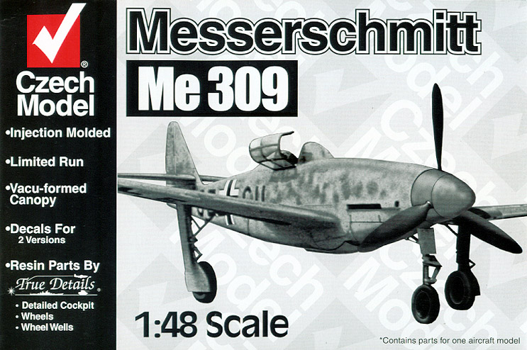
Kit #4807 MSRP $29.95
Images and text Copyright � 2004 by Matt Swan
Developmental Background
Combat experience with Willie Messerschmitt�s Me-109 indicated that greater speed, longer range and heavier armament would be needed for future operations and in late 1940 the Messerschmitt company began working on a potential replacement, the Me-309. The Me-309 was designed as an advanced concept with innovative features like retractable tricycle landing gear, a pressurized cockpit, and a variable geometry radiator along with cannon armament. The 1290kW (1750HP) Daimler-Benz DB 603 A-1or the Jumo 213 were intended as the power source turning a three blade, variable pitch metal propeller. The first prototype, the Messerschmitt Me-309 V-1, received a DB603 A-1 and the first flight took place on 18 July 1942.
Originally the Me-309 would be built in three versions. The normal fuel supply for all three versions amounted to 770 liters in two armored fuselage tanks. With the hunter/destroyer however two supplementary drop tanks of 260 liters each on hard-points under the wings was project to extend its range. The proposed armament was a 30 mm cannon and two 20 mm cannons or four 13 mm machine guns. The flying weight of the hunter/destroyer with drop tanks was computed as approximately 5430 kg. At the end of 1941 the detailed design was finished and the RLM assigned the number 309 to the new fighter. Priority was low however because there was no sense of urgency at the RLM for finding a successor to the 109.
A number of Me-109F test airframes were assigned to the 309 program to test various features of the new design. Construction of the first prototype progressed and the V-1 was completed in June 1942. Trouble with the nose wheel during taxiing trials delayed the first flight until the end of July. After some initial problems with the radiator and the reversible pitch airscrew the tests preceded favorable. Unfortunately the 309 offered little improvement in performance over the Me-109G, which could also out turn the Me-309. At this time the introduction of new, better fighters like the Fw-190D was near and little use was seen for the Me-309. Also the nose wheel was a weak point on the Me-309 and most photographs show the aircraft with its nose in the dirt.
The Me-609 was to be a twinned version similar to the American P-82. In all four prototypes of the 309 were produced. The V-4 was armed with four MG 131, two MK 108 and a MG 151/20. This heavy armament led to a decrease in speed that was unacceptable for a fighter. The Me-309 was never satisfactory as a fighter aircraft. It was judged inferior to the Fw-190D and the Me-109G series and never reached production. In the autumn of 1943 the Me-309 program was officially terminated.
The Kit
Czech Models makes some interesting kits of unusual subjects. This kit, as with most of their products, includes a bag of resin detail parts from True Details in addition to the standard injection molded pieces with both sets of parts packaged in their own plastic bags. The box all this comes in is one of those �open end� boxes rather than one where the top lifts off. I much prefer the two part box as it gives you someplace to store parts during construction. The box cover features a rough picture of the model completed but the back shows a clear black and white side and top view of the aircraft.
Lets start with the injection molded pieces, these look like typical short run work with heavy sprue connectors and some light flash. All the exterior pieces display finely engraved and consistent panel lines. Care must be exercised during parts removal due to the heavy sprue gates. All pieces show a visible mold separation line that must be scraped off. None of the primary parts have locator pins, which is a common feature of all the kits coming out of the Czech Republic regardless of manufacture. This is not necessarily a bad thing; you just have to take a few minutes making sure of parts placement before adding glue. The kit fuselage is molded with the V2 large rudder and fin in place but the V1 small rudder and fin are provided as an alternate � some surgery is required for this conversion. The plastic quality is good and reacts very quickly with Tenax 7R or any of the Butyl Acetate glues.
The resin pieces are all well formed from a light tan resin and do not seem to contain any micro-bubbles. They do have large casting blocks, which will keep you busy for a while with a razor saw or if you are lazy like I am, a dremel with sanding drum. The resin pieces include a set of strut oleo scissor arms but mine were horribly broken on arrival and had to be replaced with some PE scissors from the spares box. Also included in resin are mass balancers for the ailerons, a very nicely detailed dash and ejection seat, wheel well interiors and a few other odds and ends. We get two copies of the vacuform canopy also. These are well formed from heavy, clear polystyrene with good raised frame definition. Right from the sheet they display good clarity and will be even better with an application of Future floor polish.
Overall parts fit is good on the model for both the plastic and the resin pieces. All told we have 34 injection molded pieces, 20 resin cast pieces and two vacuform canopies for a grand total of 56 pieces in the box.
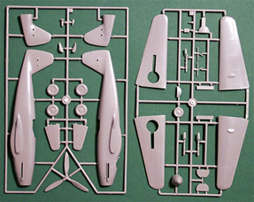
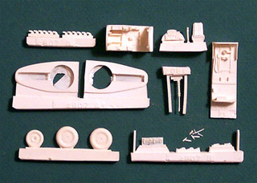
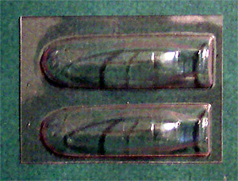
The first two pictures can be clicked on to view larger images
Decals and Instructions
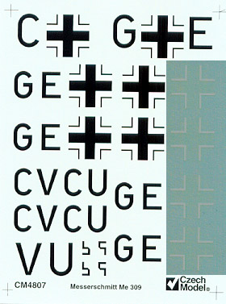
Czech Model gives us a nicely done instruction sheet for the kit. It begins with a good quality black and white picture of the V1 being serviced, a fairly comprehensive historical background on the aircraft and parts maps for both the resin and the plastic pieces. Six exploded view construction steps follow this. What is pointedly missing from these steps are color codes or call-outs. The last page of the sheet has decal placement instructions for two aircraft along with a narrative explaining the interior and exterior colors. Decals are provided for both the V1 and the V2. They are nicely thin; seem to have good color density and print registry. German aircraft manufactures seemed to be more than prolific with service markings and warning labels but the decal sheet is lacking in this department. Previous experience with Czech Model decals indicate that they behave nicely with Micro-Set and Micro-Sol setting solutions. I adjusted the contrast on the decal scan to make the white crosses more visible.
Conclusions
This is a fairly well done model of a developmental aircraft. The parts fit well; the resin pieces are well done without a lot of visible micro-bubbles. The instructions get the job done with little room for confusion and the decals, while not completely comprehensive, are at least adequate. There is very little on the aftermarket that can be added to this kit; Engines and Things offers a DB 603 engine kit and a Junkers Jumo 213 kit if you want to build this with the hood off. While not an extremely important aircraft in the annals of history, it is significant for any modeler wishing to show a complete modeled history of the Me-109 and it�s descendants.
Construction
Since there was room on the work table I decided to jump right into the construction of this model. As with most model aircraft construction begins with the preparation of the interior components. I have painted the cockpit tub and interior area of the fuselage around the cockpit with RLM-66 Black Gray. The dash is prepped with a coat of Flat Black.
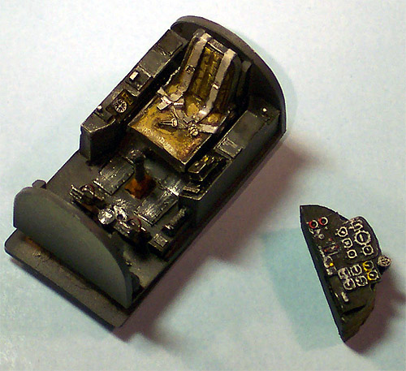
The resin seat was mounted to a toothpick to aid with painting and was airbrushed RLM-66 also. The seat cushions were done with Tamiya Khaki, the seat belts with very light gray and details were picked out with silver. A reheat instrument decal was used on the cockpit tub sidewall and other details were done with a flat white dry-brush. This was followed with a dry-brush application of silver and both pieces were washed with my basic sludge wash. The dash was dry-brushed with white, red and yellow to highlight the instruments and the canvas cover on the back was done with Khaki. The resin rudder pedals had straps added from foil, were painted RLM-66 and dry-brushed with silver then installed into the tub along with the control column.
While this was going on I also worked on the wheel wells. I used a Dremel with a sanding drum to remove the large casting blocks on all three wheel well inserts then airbrushed these areas with RLM-02. The main wells are devoid of detail but the nose well has some nice stuff in it. I worked this area over with the silver dry-brush and sludge wash. I test fit the main wheels several times within the wings to make sure I would not distort the airfoil when they went together. I had to thin the resin inserts several times before they fit well then they were fixed in place with a liberal helping of gap filling super-glue. Now the wing panels could be glued together.
With the wing panels drying I can now turn my attention to the fuselage. I strongly suggest that the instructions are studied in detail before you start gluing stuff together. During my perusal of the instructions I noted the installation of the propeller shaft. If I were to follow the instructions it would make sense to attach the prop to the shaft before closing the fuselage. I did not want to do that preferring to install the propeller last. This allows me to paint and detail the prop separately and avoid damaging it during the other assembly steps. To achieve this I had to construct a stop to hold the propeller shaft in place until I was ready to fit the prop to it. I first test fit and trimmed the nose gear well and installed that part then glued a piece of stock plastic in place as a stop for the propeller shaft. During this process I found that the propeller shaft is out-of-round and needed lots of trimming and sanding to fit properly and turn easily. The resin exhaust manifolds were installed at this time also.
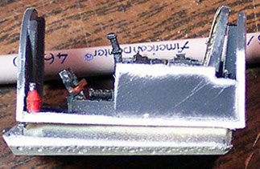
Next I�ll place the cockpit tub. I did not bother to remove the large pour block from the bottom of the cockpit tub as it was not going to interfere with any other part of the installation. Classic Airframes kits include a mix of materials similar to the Czech Model kit but with the CA kit you have to sand the inner walls of the fuselage until they are virtually paper thin before the resin pieces will fit, with the Czech kit very little trimming is needed before the fit is acceptable. In the picture to the left you can see the degree of sanding necessary to get a good fit � not much at all. With tricycle gear aircraft tail sitting is always a concern so I place a few lead sinkers on the topside of the nose gear bay and secure them with super-glue. I started with four weights then decided that was overkill and would probably result in a gear collapse, hmmm �. Might be a realistic effect? Nah, I decided not and removed two then test balanced from the main gear line and felt good about the resulting balance.
One last item to attend to is the dash. The dash fit nicely without any trim but when I test fit the fuselage I found it to be off center and had to break it free and reposition it again. Taking a little more care on the alignment proved the key and things looked good after that. This next picture shows the interior fuselage components in place just prior to closing everything up. Take note of the propeller shaft stop in the nose.
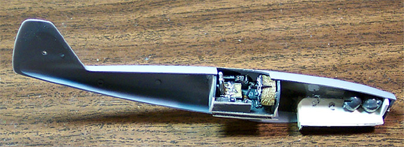
After the fuselage seam had cured and been cleaned up I had a slight gap in front of the cockpit that had to be filled with super-glue and sanded smooth before I could continue. The wing seams were cleaned up and sanded with very fine sandpaper and all panel lines crossing a glue joint on both the fuselage and the wings was rescribed. I need some furniture to assist with the wing alignment since there are no alignment tabs. I have a simple solution � pop bottle tops and quarters. I�ve placed pop bottle tops at equal points near the wing tips and under the elevators to keep everything straight and let the glue dry.
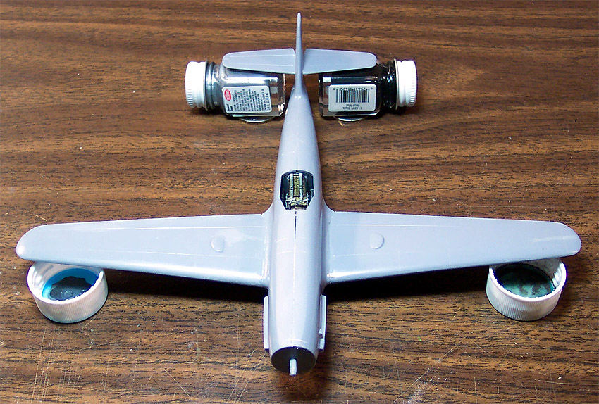
I let this all cure overnight before continuing. A few small details were added like the supercharger intake and the fresh air inlet for the cockpit. The wing joints were cleaned up and a small amount of Squadron White putty was used to finish them off. I also had to use some putty along the lower fuselage seam. Everywhere that putty is used I mask the edges off with tape to create �fences� then apply the putty and smooth it out with acetone based fingernail polish remover on a cotton swab. This process is covered with more detail in my Seam Repair feature. Once this is finished the cockpit and wheel wells are stuffed with tissue paper dampened slightly with water and packed into place with a dental pick. She is now ready for some primer.
11/10/04
All right, let�s get busy with this. Into the paint room we go and the model gets a basic primer coat using Model Master Primer Gray cut 50% with lacquer thinner. A few minor imperfections showed up especially around the nose. These were taken care of and another light coat of primer was applied. You really need to be careful not to overdo the paint on the Czech Models kits because the panel lines are very soft and you�ll easily fill them with paint. Once the final coat of primer had cured for a day or so I applied the undercoat of RLM-65 Light Blue then an overcoat of light gray along with the mottled pattern on the sides. This dried for another day and the camouflage pattern was laid out with strips of medium tack masking tape. Using a Dark Sea Gray the secondary layer of paint was applied. Did you notice that I had moved away from the RLM numbers? Yeah, I ran out of the recommended paints and had to color match from paint chips to get a match. That�s one drawback of shopping through mail order combined with not having a well-stocked LHS.
Masking tape is removed and tissue packing material is pulled out. Nothing bled under the masks so no clean up was needed. A few odd pieces of lint from the tissue were removed with tweezers and the landing gear was attached with super-glue. My paint job felt a little soft still so the model was set aside to fully cure over a couple of days and I worked on the prop and canopy. The prop was easy enough all being RLM-70 Black Green (no, I didn�t run out of that color). The canopy was a bit more of a challenge. The kit provides two canopies in the event you screw one up and fortunately I did not need the second. After dipping the canopy in Future floor polish and letting it cure, with a fresh scalpel I carefully pressed it into the frame line from the inside to separate the center section from the front and back pieces. Once this was complete I masked it off and shot some RLM-66 Back Gray to provide interior frame color then followed up with the Dark Sea Gray.
Okay, back to the model. The entire aircraft is coated with Future floor polish to seal the paint. Recently I have found that adding 3 parts of 50% isopropyl alcohol to 7 parts Future makes for a very nice finish. After this cured overnight I applied the decals with the addition of a few service stencils from the spares box, resealed with Future and then a basic Sludge Wash was applied to accent the panel lines. Next I sprayed a fine layer of Tamiya X-19 smoke for exhaust staining and sealed everything with some Polly Scale clear flat. Back to the canopy pieces now, I cut some short sections of magnet wire to make corner braces for the windshield and to make a pull handle on the center section, these were attached using Testors Clear Parts Cement and the front and rear canopy sections were attached to the model with this cement also. The center section was attached with a fine bead of super-glue immediately followed with some accelerator to prevent fogging. The retaining wire was fashioned from some very fine magnet wire wrapped around a needle then stretched slightly and glued in place.
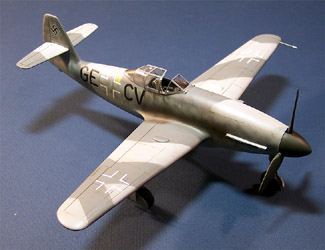
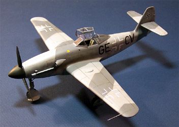
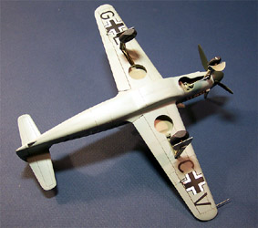
You can click on the above images to view larger pictures
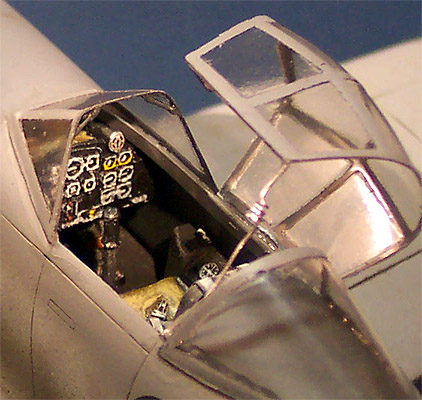
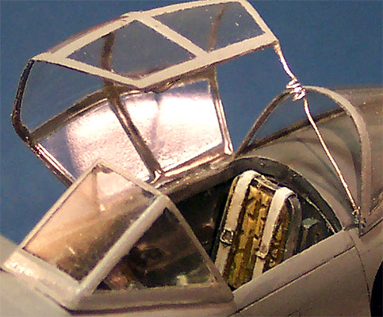
Here you can see the magnet wire additions to the front office.
This was a fun kit to build, all the pieces fit fairly well, not a lot of putty was needed, the directions were right to the point and clear to follow, the decals, while not as comprehensive as I would have liked behaved nicely and went down well. The resin pieces did need a little sanding and having a rotary tool makes that task a piece of cake � you just have to remember to wear the proper dust respirator to protect yourself. I think the Czech Model kits make excellent pieces for those modelers who are ready to make the move into multimedia kits and are fun for the more experienced modeler as well. I know I�ll be building more models from this manufacture in the future.